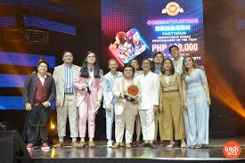

About Ben&Ben:
Ben&Ben is an indie folk/folk pop band in the Philippines which consists of 9 band members. The band quickly rose to fame and is at the top ranks of the Philippine music industry. They are one of the most streamed Filipino artists and most successful artists in the Asian region. Their songs have relatable topics which can easily captivate one's attention.
Each member has their own position and instruments that they play. When they perform altogether, they produce great music and pleasant sounding melodies.
Band Members List:
- Paolo Benjamin Guico – lead vocals, acoustic guitar
- Miguel Benjamin Guico – lead vocals, acoustic guitar
- Poch Barretto – lead guitar, backing vocals
- Jam Villanueva – drums
- Agnes Reoma – bass
- Patricia Lasaten – keyboards
- Andrew de Pano – percussion, backing vocals
- Toni Muñoz – percussion, backing vocals
- Keifer Cabugao – violin, backing vocals
Ben&Ben also had their first film in the year 2019. They were one of the starrings of the film LSS (Last Song Syndrome). 10 original songs were featured in the film named:
They won the latest 2020 5th Wish Music Awards with their song "Pagtingin" in the category of "Wishclusive Urban Performance of the Year" and also won the category of "Wish Group of the Year"
They also won the "Best Performance by a Group Recording Artist" and "Favorite Song of the Year" with their song "Pagtingin"and the "Favorite Album of the Year" with their first album "Limasawa Street" , in the 33rd Awit Awards.